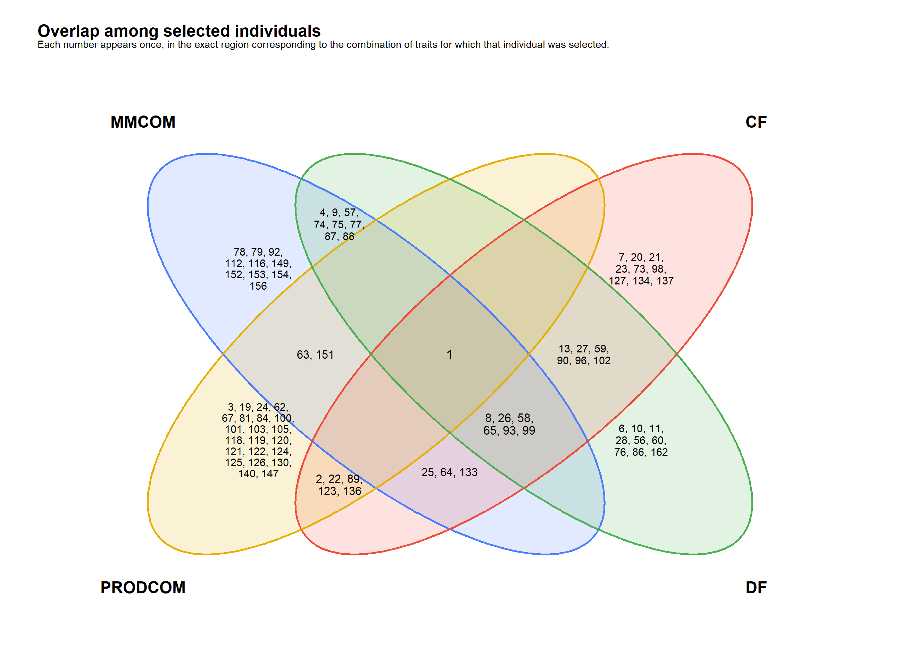

1. Objective
This module brings together the results produced in Module 03 and organizes them into a sequence focused on interpretation and genomic selection:
evaluate convergence diagnostics → summarize model-fit and predictive-performance metrics → select the method for each trait → interpret genomic values → examine relationships among traits → define eligibility → select individuals → evaluate recurrence.
Method choice is performed separately for each trait and prioritizes OOF predictive performance. DIC remains complementary information. MCMC diagnostics summarize overall chain behavior but do not act as a selection filter.
After method choice, OOF GEBVs are obtained for all traits and are also examined jointly through their correlations. Eligibility criteria for genomic selection are applied only after this step.
2. Preparing the analysis
2.1 Packages and helper functions
The packages below are used for table manipulation, figures, formatting, and project-relative paths.
library(dplyr) # Group, join, and summarize tables.
library(tidyr) # Reshape data between long and wide formats.
library(ggplot2) # Build diagnostic figures.
library(ggthemes) # Apply the GDocs theme and color scale.
library(knitr) # Format tables in R Markdown documents.
library(here) # Build project-relative paths.The helper function below standardizes table presentation throughout the tutorial.
2.2 Input objects and configuration
The module uses matrices_object.rds, containing
phenotypes and metadata, and models_object.rds, containing
fold-level metrics, OOF predictions, and MCMC diagnostics. Results are
written only at the end of the analysis.
matrices_object <- readRDS(
here("output", "matrices", "matrices_object.rds")
)
models_object <- readRDS(
here("output", "models", "models_object.rds")
)
metrics <- models_object$metrics_by_fold
predictions <- models_object$predictions
convergence <- models_object$convergence_diagnostics
traits <- colnames(matrices_object$phenotypes)
methods <- models_object$settings$methods
OOF_R_MAGNITUDE_THRESHOLD <- 0.30
NRMSE_SELECTION_THRESHOLD <- 1.00
SELECTION_PROPORTION <- 0.20Internal method codes are retained in analytical objects. The labels and theme below affect presentation only.
method_labels <- c(
RRBLUP = "RR-BLUP/BRR",
BayesA = "BayesA",
BayesB = "BayesB",
BayesB2 = "BayesB2",
BayesC = "BayesC",
BL = "Bayesian Lasso",
GBLUP = "GBLUP"
)
selection_objective_labels <- c(
increase = "Increase",
decrease = "Decrease"
)
project_theme <- theme_gdocs() +
theme(
legend.position = "bottom",
legend.direction = "horizontal",
legend.box = "horizontal",
strip.text = element_text(face = "bold"),
plot.title = element_text(face = "bold")
)3. MCMC diagnostics and convergence
Before comparing model performance, MCMC diagnostics are examined to assess whether chain behavior is compatible with convergence under the monitored criteria.
3.1 Global summary of MCMC diagnostics
Diagnostics calculated in Module 03 are summarized globally. A fit is
counted as unflagged when none of its monitored parameters received
Review_flag.
fit_convergence <- convergence |>
group_by(Run_id, Trait, Method) |>
summarise(
Diagnostic_flag = any(Review_flag, na.rm = TRUE),
.groups = "drop"
)
convergence_overview <- data.frame(
Level = c("Fits", "Monitored parameters"),
Total = c(nrow(fit_convergence), nrow(convergence)),
Without_flags = c(
sum(!fit_convergence$Diagnostic_flag),
sum(!convergence$Review_flag, na.rm = TRUE)
)
) |>
mutate(
Proportion_without_flags = Without_flags / Total
)
format_table(
convergence_overview,
digits = 4,
caption = "Global summary of MCMC diagnostics",
col.names = c("Level", "Total", "Without flags", "Proportion")
)| Level | Total | Without flags | Proportion |
|---|---|---|---|
| Fits | 350 | 314 | 0.8971 |
| Monitored parameters | 700 | 658 | 0.9400 |
The predominance of fits and parameters without flags indicates that most chains showed behavior compatible with convergence according to the monitored diagnostics. This summary does not prove convergence of every individual marker effect and does not participate in method choice.
Observed-versus-predicted plots complement the numerical metrics. The dashed line represents the 1:1 relationship and the continuous line is the regression of observed values on OOF predictions.
4. Model performance and method selection
4.1 OOF predictive performance
OOF estimates inherit the validation design defined in previous modules. Each individual contributes one OOF prediction per method and trait. Pooled metrics describe predictive performance in the population represented by the dataset.
# Combine OOF predictions and compute aggregate predictive metrics by trait and method.
pooled_metrics <- predictions |>
group_by(Trait, Method) |>
summarise(
N = n(),
r = cor(Observed, Predicted),
RMSE = sqrt(mean((Observed - Predicted)^2)),
MAE = mean(abs(Observed - Predicted)),
Bias = mean(Predicted - Observed),
Slope = cov(Observed, Predicted) / var(Predicted),
.groups = "drop"
) |>
mutate(
t_value = r * sqrt((N - 2) / (1 - r^2)),
p_value = 2 * pt(abs(t_value), df = N - 2, lower.tail = FALSE)
) |>
select(-t_value)
# Summarize the results in `fold_summary`.
fold_summary <- metrics |>
group_by(Trait, Method) |>
summarise(
Mean_DIC = mean(DIC),
SD_DIC = sd(DIC),
Mean_fold_r = mean(Correlation),
SD_fold_r = sd(Correlation),
Mean_fold_RMSE = mean(RMSE),
SD_fold_RMSE = sd(RMSE),
Mean_fold_MAE = mean(MAE),
SD_fold_MAE = sd(MAE),
.groups = "drop"
)Pearson correlation, RMSE, MAE, bias, and slope are calculated from the 150 OOF predictions. Correlation p-values are retained only as descriptive information.
4.2 DIC and relative support
DIC is summarized within each trait as complementary information. Following the logic of the reference study (Silva et al. 2021):
\[ \Delta_j=\overline{DIC}_j-\min_k(\overline{DIC}_k), \]
\[ Wprob_j=\frac{\exp(-\Delta_j/2)}{\sum_k\exp(-\Delta_k/2)}, \qquad ER_j=\frac{Wprob_{\max}}{Wprob_j}. \]
Wprob represents relative support derived from DIC and
is not interpreted as a calibrated posterior model probability.
# Combine fold performance and DIC to build the quantities used for model comparison.
model_comparison <- pooled_metrics |>
left_join(fold_summary, by = c("Trait", "Method")) |>
group_by(Trait) |>
mutate(
Delta_DIC = Mean_DIC - min(Mean_DIC),
log_weight = -0.5 * Delta_DIC,
stable_weight = exp(log_weight - max(log_weight)),
Wprob = stable_weight / sum(stable_weight),
# Compute the evidence ratio relative to the method with the largest Wprob in each trait.
ER = max(Wprob) / Wprob
) |>
ungroup() |>
select(
Trait, Method, Mean_DIC, SD_DIC, Delta_DIC, Wprob, ER,
N, r, p_value, RMSE, MAE, Bias, Slope,
Mean_fold_r, SD_fold_r, Mean_fold_RMSE, SD_fold_RMSE,
Mean_fold_MAE, SD_fold_MAE
) |>
arrange(match(Trait, traits), Delta_DIC)4.3 Integrated comparison and method choice
OOF predictive performance and DIC address different questions. OOF correlation is the main reference for predictive ability, whereas DIC provides complementary information on fit and complexity.
# Order methods and build the OOF-correlation figure by trait.
predictive_plot <- model_comparison |>
mutate(Method = factor(Method, levels = methods)) |>
ggplot(aes(x = Method, y = r, fill = Method)) +
geom_hline(yintercept = 0, linetype = 2, linewidth = 0.4) +
geom_hline(
yintercept = c(
-OOF_R_MAGNITUDE_THRESHOLD,
OOF_R_MAGNITUDE_THRESHOLD
),
linetype = 3,
linewidth = 0.5
) +
geom_col(width = 0.75) +
facet_wrap(~ Trait, scales = "fixed", ncol = 2) +
scale_fill_gdocs(
breaks = methods,
labels = method_labels
) +
scale_x_discrete(labels = method_labels) +
labs(
x = NULL,
y = "OOF correlation",
fill = "Method",
title = "Predictive ability of the seven methods",
subtitle = paste0(
"Dotted lines indicate |OOF r| = ",
sprintf("%.2f", OOF_R_MAGNITUDE_THRESHOLD),
"; eligibility requires a magnitude greater than this value."
)
) +
project_theme +
guides(fill = guide_legend(nrow = 1, byrow = TRUE)) +
theme(
legend.direction = "horizontal",
legend.box = "horizontal",
axis.text.x = element_text(angle = 45, hjust = 1)
)
predictive_plot
The joint table allows the two evidence sources to be compared without combining them into a single artificial score.
model_comparison_display <- model_comparison |>
mutate(Method_label = unname(method_labels[Method])) |>
transmute(
Trait,
Method,
Method_label,
DIC = sprintf("%.2f", Mean_DIC),
Delta_DIC = sprintf("%.2f", Delta_DIC),
Wprob = sprintf("%.3f", Wprob),
ER = sprintf("%.3f", ER),
r = sprintf("%.3f", r),
p_value = if_else(
p_value < 0.001,
"<0.001",
sprintf("%.3f", p_value)
)
) |>
arrange(match(Trait, traits), match(Method, methods))
format_table(
model_comparison_display |>
select(Trait, Method_label, DIC, Delta_DIC, Wprob, ER, r, p_value),
caption = "Comparison of the seven methods by trait",
col.names = c("Trait", "Method", "DIC", "Delta DIC", "Wprob", "ER", "r", "p-value")
)| Trait | Method | DIC | Delta DIC | Wprob | ER | r | p-value |
|---|---|---|---|---|---|---|---|
| MMCOM | RR-BLUP/BRR | -19.28 | 0.48 | 0.182 | 1.270 | 0.526 | <0.001 |
| MMCOM | BayesA | -18.40 | 1.36 | 0.117 | 1.972 | 0.528 | <0.001 |
| MMCOM | BayesB | -17.65 | 2.11 | 0.081 | 2.866 | 0.530 | <0.001 |
| MMCOM | BayesB2 | -18.38 | 1.38 | 0.116 | 1.991 | 0.529 | <0.001 |
| MMCOM | BayesC | -18.47 | 1.28 | 0.122 | 1.899 | 0.529 | <0.001 |
| MMCOM | Bayesian Lasso | -19.75 | 0.00 | 0.231 | 1.000 | 0.526 | <0.001 |
| MMCOM | GBLUP | -18.89 | 0.86 | 0.150 | 1.539 | 0.535 | <0.001 |
| PRODCOM | RR-BLUP/BRR | 1069.69 | 0.86 | 0.148 | 1.536 | 0.329 | <0.001 |
| PRODCOM | BayesA | 1070.03 | 1.20 | 0.125 | 1.823 | 0.336 | <0.001 |
| PRODCOM | BayesB | 1070.29 | 1.46 | 0.110 | 2.073 | 0.337 | <0.001 |
| PRODCOM | BayesB2 | 1070.05 | 1.22 | 0.124 | 1.839 | 0.338 | <0.001 |
| PRODCOM | BayesC | 1069.83 | 1.00 | 0.138 | 1.647 | 0.333 | <0.001 |
| PRODCOM | Bayesian Lasso | 1069.98 | 1.15 | 0.128 | 1.775 | 0.314 | <0.001 |
| PRODCOM | GBLUP | 1068.83 | 0.00 | 0.227 | 1.000 | 0.347 | <0.001 |
| PRODEF | RR-BLUP/BRR | 714.34 | 0.89 | 0.138 | 1.557 | 0.042 | 0.606 |
| PRODEF | BayesA | 714.21 | 0.76 | 0.147 | 1.465 | 0.038 | 0.641 |
| PRODEF | BayesB | 714.52 | 1.07 | 0.126 | 1.703 | 0.044 | 0.593 |
| PRODEF | BayesB2 | 714.18 | 0.73 | 0.149 | 1.442 | 0.038 | 0.647 |
| PRODEF | BayesC | 714.45 | 0.99 | 0.131 | 1.644 | 0.046 | 0.572 |
| PRODEF | Bayesian Lasso | 715.07 | 1.62 | 0.095 | 2.251 | 0.046 | 0.576 |
| PRODEF | GBLUP | 713.45 | 0.00 | 0.215 | 1.000 | 0.049 | 0.554 |
| CF | RR-BLUP/BRR | 557.47 | 1.23 | 0.119 | 1.850 | 0.386 | <0.001 |
| CF | BayesA | 557.77 | 1.53 | 0.102 | 2.151 | 0.391 | <0.001 |
| CF | BayesB | 556.88 | 0.63 | 0.160 | 1.372 | 0.401 | <0.001 |
| CF | BayesB2 | 557.74 | 1.50 | 0.104 | 2.114 | 0.391 | <0.001 |
| CF | BayesC | 556.62 | 0.37 | 0.182 | 1.205 | 0.397 | <0.001 |
| CF | Bayesian Lasso | 556.24 | 0.00 | 0.220 | 1.000 | 0.389 | <0.001 |
| CF | GBLUP | 557.56 | 1.32 | 0.114 | 1.933 | 0.389 | <0.001 |
| DF | RR-BLUP/BRR | 348.39 | 0.35 | 0.164 | 1.192 | 0.321 | <0.001 |
| DF | BayesA | 349.09 | 1.05 | 0.115 | 1.694 | 0.319 | <0.001 |
| DF | BayesB | 349.39 | 1.35 | 0.099 | 1.967 | 0.324 | <0.001 |
| DF | BayesB2 | 349.08 | 1.05 | 0.116 | 1.687 | 0.318 | <0.001 |
| DF | BayesC | 348.57 | 0.53 | 0.150 | 1.307 | 0.326 | <0.001 |
| DF | Bayesian Lasso | 348.03 | 0.00 | 0.195 | 1.000 | 0.327 | <0.001 |
| DF | GBLUP | 348.43 | 0.39 | 0.160 | 1.218 | 0.316 | <0.001 |
| DCI | RR-BLUP/BRR | 292.92 | 1.03 | 0.133 | 1.673 | 0.200 | 0.014 |
| DCI | BayesA | 293.54 | 1.65 | 0.098 | 2.283 | 0.193 | 0.018 |
| DCI | BayesB | 292.81 | 0.92 | 0.141 | 1.583 | 0.201 | 0.014 |
| DCI | BayesB2 | 293.53 | 1.65 | 0.098 | 2.278 | 0.194 | 0.017 |
| DCI | BayesC | 292.16 | 0.27 | 0.194 | 1.147 | 0.200 | 0.014 |
| DCI | Bayesian Lasso | 291.89 | 0.00 | 0.223 | 1.000 | 0.224 | 0.006 |
| DCI | GBLUP | 293.24 | 1.35 | 0.113 | 1.964 | 0.158 | 0.054 |
| EP | RR-BLUP/BRR | 163.40 | 2.56 | 0.079 | 3.605 | -0.075 | 0.362 |
| EP | BayesA | 161.87 | 1.04 | 0.170 | 1.681 | -0.052 | 0.523 |
| EP | BayesB | 161.94 | 1.10 | 0.165 | 1.734 | -0.046 | 0.577 |
| EP | BayesB2 | 161.86 | 1.03 | 0.171 | 1.670 | -0.052 | 0.528 |
| EP | BayesC | 162.94 | 2.11 | 0.100 | 2.868 | -0.062 | 0.452 |
| EP | Bayesian Lasso | 165.46 | 4.62 | 0.028 | 10.089 | -0.090 | 0.274 |
| EP | GBLUP | 160.84 | 0.00 | 0.286 | 1.000 | -0.038 | 0.645 |
| FFC | RR-BLUP/BRR | 376.66 | 0.79 | 0.133 | 1.481 | 0.210 | 0.010 |
| FFC | BayesA | 376.39 | 0.52 | 0.152 | 1.297 | 0.191 | 0.019 |
| FFC | BayesB | 376.62 | 0.74 | 0.136 | 1.450 | 0.186 | 0.023 |
| FFC | BayesB2 | 376.40 | 0.52 | 0.151 | 1.300 | 0.190 | 0.020 |
| FFC | BayesC | 376.74 | 0.86 | 0.128 | 1.538 | 0.200 | 0.014 |
| FFC | Bayesian Lasso | 377.16 | 1.29 | 0.103 | 1.901 | 0.218 | 0.007 |
| FFC | GBLUP | 375.87 | 0.00 | 0.197 | 1.000 | 0.195 | 0.017 |
| FFP | RR-BLUP/BRR | 198.97 | 3.80 | 0.043 | 6.676 | 0.058 | 0.484 |
| FFP | BayesA | 195.86 | 0.69 | 0.202 | 1.409 | 0.086 | 0.293 |
| FFP | BayesB | 195.99 | 0.81 | 0.190 | 1.501 | 0.089 | 0.280 |
| FFP | BayesB2 | 195.82 | 0.65 | 0.206 | 1.383 | 0.087 | 0.290 |
| FFP | BayesC | 198.06 | 2.89 | 0.067 | 4.240 | 0.069 | 0.399 |
| FFP | Bayesian Lasso | 202.46 | 7.28 | 0.007 | 38.143 | 0.032 | 0.701 |
| FFP | GBLUP | 195.17 | 0.00 | 0.285 | 1.000 | 0.090 | 0.273 |
| SS | RR-BLUP/BRR | 381.93 | 0.45 | 0.147 | 1.254 | 0.085 | 0.302 |
| SS | BayesA | 382.39 | 0.92 | 0.116 | 1.580 | 0.082 | 0.319 |
| SS | BayesB | 382.11 | 0.64 | 0.134 | 1.374 | 0.084 | 0.308 |
| SS | BayesB2 | 382.42 | 0.94 | 0.115 | 1.599 | 0.082 | 0.321 |
| SS | BayesC | 381.74 | 0.26 | 0.161 | 1.140 | 0.085 | 0.302 |
| SS | Bayesian Lasso | 381.48 | 0.00 | 0.184 | 1.000 | 0.095 | 0.248 |
| SS | GBLUP | 381.99 | 0.51 | 0.143 | 1.289 | 0.067 | 0.414 |
The table shows that OOF correlation and DIC provide complementary information: a method may have better relative DIC fit without being the most predictive out of sample. The metrics are therefore not combined into an artificial score; OOF correlation defines predictive priority and RMSE, MAE, and DIC follow the predefined tie-breaking sequence.
The method used in subsequent steps is selected within each trait by the highest OOF correlation. Ties are resolved, in order, by lower RMSE, lower MAE, and lower mean DIC.
trait_scale <- predictions |>
distinct(Trait, IND, Observed) |>
group_by(Trait) |>
summarise(
Phenotypic_mean = mean(Observed, na.rm = TRUE),
Phenotypic_SD = sd(Observed, na.rm = TRUE),
.groups = "drop"
)
selected_methods <- model_comparison |>
group_by(Trait) |>
arrange(desc(r), RMSE, MAE, Mean_DIC, .by_group = TRUE) |>
slice(1L) |>
ungroup() |>
transmute(
Trait,
Selected_method = Method,
r,
Abs_r = abs(r),
p_value,
RMSE,
MAE,
Bias,
Slope,
Mean_DIC,
Delta_DIC,
Wprob,
ER
) |>
left_join(trait_scale, by = "Trait") |>
arrange(desc(r), match(Trait, traits))
trait_order_by_prediction <- selected_methods$TraitThe table below summarizes the method selected for each trait and the main metrics used in that choice.
selected_methods_display <- selected_methods |>
mutate(Method_label = unname(method_labels[Selected_method])) |>
transmute(
Trait,
Method_label,
r = sprintf("%.3f", r),
Abs_r = sprintf("%.3f", Abs_r),
RMSE = sprintf("%.3f", RMSE),
MAE = sprintf("%.3f", MAE),
DIC = sprintf("%.2f", Mean_DIC)
)
format_table(
selected_methods_display,
caption = "Selected method for each trait, ordered by OOF correlation",
col.names = c(
"Trait", "Method", "OOF r", "|r|",
"RMSE", "MAE", "Mean DIC"
)
)| Trait | Method | OOF r | |r| | RMSE | MAE | Mean DIC |
|---|---|---|---|---|---|---|
| MMCOM | GBLUP | 0.535 | 0.535 | 0.225 | 0.182 | -18.89 |
| CF | BayesB | 0.401 | 0.401 | 2.459 | 1.960 | 556.88 |
| PRODCOM | GBLUP | 0.347 | 0.347 | 20.283 | 16.026 | 1068.83 |
| DF | Bayesian Lasso | 0.327 | 0.327 | 1.069 | 0.838 | 348.03 |
| DCI | Bayesian Lasso | 0.224 | 0.224 | 0.810 | 0.633 | 291.89 |
| FFC | Bayesian Lasso | 0.218 | 0.218 | 1.148 | 0.889 | 377.16 |
| SS | Bayesian Lasso | 0.095 | 0.095 | 1.232 | 0.963 | 381.48 |
| FFP | GBLUP | 0.090 | 0.090 | 0.580 | 0.276 | 195.17 |
| PRODEF | GBLUP | 0.049 | 0.049 | 4.832 | 3.885 | 713.45 |
| EP | GBLUP | -0.038 | 0.038 | 0.495 | 0.330 | 160.84 |
Method choice is trait-dependent: GBLUP was selected for five traits,
Bayesian Lasso for four, and BayesB for one. MMCOM has the largest OOF
correlation magnitude among the selected methods (r =
0.535). The heterogeneity among selected methods confirms that no single
method is uniformly superior across all traits.
4.4 Observed versus predicted values
selected_predictions <- predictions |>
inner_join(
selected_methods |>
select(Trait, Selected_method, r),
by = "Trait"
) |>
filter(Method == Selected_method) |>
mutate(
Method_label = unname(method_labels[Method]),
Facet = paste0(
Trait, " — ", Method_label,
"\nr = ", sprintf("%.3f", r)
)
)
observed_predicted_plot <- selected_predictions |>
ggplot(aes(x = Predicted, y = Observed)) +
geom_abline(intercept = 0, slope = 1, linetype = 2, linewidth = 0.5) +
geom_point(alpha = 0.65, size = 1.6) +
geom_smooth(method = "lm", formula = y ~ x, se = FALSE, linewidth = 0.7) +
facet_wrap(~ Facet, scales = "free", ncol = 2) +
labs(
x = "OOF predicted value",
y = "Observed value",
title = "Relationship between observed and predicted values"
) +
project_theme +
theme(legend.position = "none")
observed_predicted_plot
| Version | Author | Date |
|---|---|---|
| f151b7e | GitHub | 2026-09-08 |
The figure visually confirms the heterogeneity in the numerical metrics: MMCOM shows the clearest observed-versus-predicted association, whereas traits with correlations close to zero show more dispersed point clouds. The 1:1 and regression lines are calibration references and do not alter the selection criteria.
4.5 Marker-based heritability analogue and adjusted accuracy in RR-BLUP/BRR
Following Silva et al. (Silva et al. 2021), RR-BLUP/BRR
allows a marker-based heritability analogue to be derived from marker
variance. Fold-level adjusted accuracy is calculated as
Correlation / sqrt(H2).
This ratio is a derived quantity rather than a direct correlation between true and predicted genetic values. It may therefore be negative or exceed 1.
# Compute and organize the RR-BLUP/BRR model-based heritability summary.
rrblup_variance_components <- convergence |>
filter(
Method == "RRBLUP",
Parameter %in% c("Residual_variance", "Marker_variance")
) |>
select(Run_id, Trait, Fold, Method, Parameter, Posterior_mean) |>
pivot_wider(names_from = Parameter, values_from = Posterior_mean)
rrblup_fold_correlations <- metrics |>
filter(Method == "RRBLUP") |>
select(Trait, Fold, Correlation)
# Organize the cross-validation and fitting structure.
rrblup_heritability_by_fold <- rrblup_variance_components |>
left_join(rrblup_fold_correlations, by = c("Trait", "Fold")) |>
mutate(
Marker_variance_denominator = matrices_object$denominator,
Additive_variance = Marker_variance * Marker_variance_denominator,
H2 = Additive_variance / (Additive_variance + Residual_variance),
Predictive_accuracy = Correlation / sqrt(H2)
) |>
arrange(match(Trait, traits), Fold)
# Summarize the RR-BLUP/BRR model-based heritability analogue and adjusted accuracy across folds.
rrblup_heritability_summary <- rrblup_heritability_by_fold |>
group_by(Trait) |>
summarise(
Mean_H2 = mean(H2),
SD_H2 = sd(H2),
Mean_fold_r = mean(Correlation),
SD_fold_r = sd(Correlation),
Mean_predictive_accuracy = mean(Predictive_accuracy),
SD_predictive_accuracy = sd(Predictive_accuracy),
.groups = "drop"
) |>
arrange(match(Trait, traits))The trait summary presents the marker-based heritability analogue and adjusted accuracy across folds.
rrblup_table <- rrblup_heritability_summary |>
transmute(
Trait,
RRBLUP_H2 = sprintf("%.3f", Mean_H2),
SD_RRBLUP_H2 = sprintf("%.3f", SD_H2),
RRBLUP_predictive_accuracy = sprintf("%.3f", Mean_predictive_accuracy),
SD_RRBLUP_predictive_accuracy = sprintf("%.3f", SD_predictive_accuracy)
)
format_table(
rrblup_table,
caption = "Marker-based heritability analogue and adjusted predictive accuracy in RR-BLUP/BRR",
col.names = c("Trait", "RR-BLUP H2", "SD RR-BLUP H2", "RR-BLUP predictive accuracy", "SD RR-BLUP predictive accuracy")
)| Trait | RR-BLUP H2 | SD RR-BLUP H2 | RR-BLUP predictive accuracy | SD RR-BLUP predictive accuracy |
|---|---|---|---|---|
| MMCOM | 0.336 | 0.027 | 0.925 | 0.192 |
| PRODCOM | 0.266 | 0.007 | 0.651 | 0.135 |
| PRODEF | 0.253 | 0.034 | 0.234 | 0.305 |
| CF | 0.296 | 0.019 | 0.750 | 0.228 |
| DF | 0.293 | 0.018 | 0.647 | 0.294 |
| DCI | 0.276 | 0.020 | 0.455 | 0.312 |
| EP | 0.223 | 0.024 | 0.159 | 0.573 |
| FFC | 0.258 | 0.038 | 0.470 | 0.269 |
| FFP | 0.208 | 0.017 | 0.304 | 0.237 |
| SS | 0.271 | 0.023 | 0.202 | 0.205 |
The table shows that the marker-based heritability analogue and
adjusted accuracy vary across traits, reflecting differences in the
relative genomic contribution and predictive performance across folds.
Adjusted accuracy must be interpreted as the derived ratio
Correlation / sqrt(H2), not as a correlation observed
directly with true genetic value; negative values or values above 1
should therefore not be read as conventional correlations.
5. OOF genomic values and relationships among traits
5.1 OOF GEBVs on the trait scale
For each trait, the genomic component comes from the selected method and remains cross-fitted: the individual’s own phenotype was not used in the fit that produced its OOF score.
A version in the original trait units is also presented:
\[ GEBV_{scale} = \bar{y} + GEBV_{centered}. \]
Adding the phenotypic mean only shifts the scale. It does not change the ranking and does not turn the GEBV into a complete phenotypic prediction.
oof_genomic_values <- predictions |>
inner_join(
selected_methods |>
select(
Trait, Selected_method, r, p_value
),
by = "Trait"
) |>
filter(Method == Selected_method) |>
left_join(trait_scale, by = "Trait") |>
transmute(
IND,
Trait,
Fold,
Method,
Observed,
Predicted,
OOF_r = r,
OOF_p_value = p_value,
Phenotypic_mean,
GEBV_centered = Genomic_component,
GEBV_on_trait_scale = Phenotypic_mean + Genomic_component
) |>
arrange(match(Trait, traits), IND)5.2 Correlation among OOF GEBVs for all ten traits
Before any eligibility filter is applied, OOF GEBVs from the selected methods are organized for all ten traits. The matrix below describes associations among these cross-fitted scores.
oof_genomic_wide <- oof_genomic_values |>
select(IND, Trait, GEBV_centered) |>
pivot_wider(names_from = Trait, values_from = GEBV_centered)
oof_genomic_correlations <- cor(
as.matrix(
oof_genomic_wide[, trait_order_by_prediction, drop = FALSE]
)
)These correlations are not estimates of genetic correlation from a multivariate model. They describe only the association among OOF GEBVs produced separately for each trait.
# Reshape the OOF correlation matrix and build the cross-trait heatmap.
correlation_long <- as.data.frame(
as.table(oof_genomic_correlations)
)
names(correlation_long) <- c(
"Trait_1",
"Trait_2",
"Correlation"
)
# Set only the label of |r| < 0.005 to zero; the original correlation still drives analysis and color.
correlation_long <- correlation_long |>
mutate(
Trait_1 = factor(
Trait_1,
levels = trait_order_by_prediction
),
Trait_2 = factor(
Trait_2,
levels = rev(trait_order_by_prediction)
),
Correlation_label = replace(
Correlation,
abs(Correlation) < 0.005,
0
)
)
# Build the heatmap of correlations among OOF genomic values.
correlation_plot <- ggplot(
correlation_long,
aes(x = Trait_1, y = Trait_2, fill = Correlation)
) +
geom_tile() +
geom_text(
aes(label = sprintf("%.2f", Correlation_label)),
size = 3
) +
scale_fill_distiller(
type = "div",
palette = "RdBu",
direction = 1,
limits = c(-1, 1)
) +
labs(
x = NULL,
y = NULL,
fill = "r",
title = "Correlation among OOF GEBVs for all ten traits"
) +
coord_equal() +
project_theme +
theme(axis.text.x = element_text(angle = 45, hjust = 1))
correlation_plot
The matrix is descriptive: positive values indicate a tendency to rank individuals similarly across traits, whereas negative values indicate opposite tendencies. It does not define an eligibility threshold and is not a genetic-correlation estimate from a multivariate model.
6. Genomic selection in eligible traits
6.1 Eligibility criteria
Selection is performed only when the selected method for a trait simultaneously satisfies:
\[ |r_{OOF}| > 0.30 \]
and
\[ NRMSE = \frac{RMSE}{s_y} < 1, \]
where \(s_y\) is the observed phenotypic standard deviation. The first criterion uses the magnitude of the observed-versus-predicted OOF correlation. The sign of \(r\) remains available for interpretation; large negative values represent inverted ordering and must be discussed explicitly even though eligibility is applied to \(|r|\).
selection_objective_map <- c(
MMCOM = "increase",
PRODCOM = "increase",
PRODEF = "decrease",
CF = "increase",
DF = "increase",
DCI = "decrease",
EP = "increase",
FFC = "increase",
FFP = "increase",
SS = "increase"
)
selection_objectives <- data.frame(
Trait = traits,
Selection_objective = unname(selection_objective_map[traits]),
stringsAsFactors = FALSE
)
model_selection <- selected_methods |>
left_join(selection_objectives, by = "Trait") |>
mutate(
NRMSE = RMSE / Phenotypic_SD,
Predictive_skill_vs_SD = 1 - NRMSE,
Correlation_direction = if_else(r >= 0, "positive", "negative"),
Eligible_by_correlation =
Abs_r > OOF_R_MAGNITUDE_THRESHOLD,
Eligible_by_error =
NRMSE < NRMSE_SELECTION_THRESHOLD,
Selection_eligible =
Eligible_by_correlation & Eligible_by_error,
Eligibility_reason = case_when(
Selection_eligible ~ "eligible",
!Eligible_by_correlation & !Eligible_by_error ~
"fails_correlation_and_error",
!Eligible_by_correlation ~ "fails_correlation",
!Eligible_by_error ~ "fails_error",
TRUE ~ "review"
)
) |>
arrange(desc(Abs_r), NRMSE, match(Trait, traits))
eligible_traits <- model_selection |>
filter(Selection_eligible) |>
pull(Trait)
selection_parameters <- data.frame(
Parameter = c(
"Method choice",
"Minimum OOF correlation magnitude",
"Maximum NRMSE",
"Selected proportion"
),
Rule = c(
"Highest r; ties by lower RMSE, lower MAE, and lower DIC",
"|r| > 0.30",
"< 1.00",
"20% per eligible trait"
),
stringsAsFactors = FALSE
)
format_table(
selection_parameters,
caption = "Criteria used for method choice and genomic selection",
col.names = c("Parameter", "Rule")
)| Parameter | Rule |
|---|---|
| Method choice | Highest r; ties by lower RMSE, lower MAE, and lower DIC |
| Minimum OOF correlation magnitude | |r| > 0.30 |
| Maximum NRMSE | < 1.00 |
| Selected proportion | 20% per eligible trait |
The eligibility threshold is applied to predictive OOF correlation
magnitude: \(|r_{OOF}| > 0.30\).
Eligibility is displayed from the largest to the smallest
|r|. The OOF-GEBV correlation matrix across the ten traits
remains descriptive and does not use this threshold.
6.2 Eligible traits and justification
eligibility_reason_labels <- c(
eligible = "Selected: |r| > 0.30 and NRMSE < 1",
fails_correlation = "Not selected: |r| <= 0.30",
fails_error = "Not selected: NRMSE >= 1",
fails_correlation_and_error =
"Not selected: |r| <= 0.30 and NRMSE >= 1",
review = "Review"
)
correlation_direction_labels <- c(
positive = "Positive",
negative = "Negative"
)
model_selection_display <- model_selection |>
mutate(
Method_label = unname(method_labels[Selected_method]),
Objective = unname(selection_objective_labels[Selection_objective]),
Direction = unname(
correlation_direction_labels[Correlation_direction]
),
Eligible = if_else(Selection_eligible, "Yes", "No"),
Reason = unname(
eligibility_reason_labels[Eligibility_reason]
)
) |>
transmute(
Trait,
Method_label,
Objective,
r = sprintf("%.3f", r),
Abs_r = sprintf("%.3f", Abs_r),
Direction,
NRMSE = sprintf("%.3f", NRMSE),
Eligible,
Reason
)
format_table(
model_selection_display,
caption = "Genomic-selection eligibility ordered by OOF correlation magnitude",
col.names = c(
"Trait", "Method", "Objective", "r", "|r|",
"Direction", "NRMSE", "Eligible", "Reason"
)
)| Trait | Method | Objective | r | |r| | Direction | NRMSE | Eligible | Reason |
|---|---|---|---|---|---|---|---|---|
| MMCOM | GBLUP | Increase | 0.535 | 0.535 | Positive | 0.848 | Yes | Selected: |r| > 0.30 and NRMSE < 1 |
| CF | BayesB | Increase | 0.401 | 0.401 | Positive | 0.922 | Yes | Selected: |r| > 0.30 and NRMSE < 1 |
| PRODCOM | GBLUP | Increase | 0.347 | 0.347 | Positive | 0.943 | Yes | Selected: |r| > 0.30 and NRMSE < 1 |
| DF | Bayesian Lasso | Increase | 0.327 | 0.327 | Positive | 0.965 | Yes | Selected: |r| > 0.30 and NRMSE < 1 |
| DCI | Bayesian Lasso | Decrease | 0.224 | 0.224 | Positive | 0.994 | No | Not selected: |r| <= 0.30 |
| FFC | Bayesian Lasso | Increase | 0.218 | 0.218 | Positive | 1.000 | No | Not selected: |r| <= 0.30 and NRMSE >= 1 |
| SS | Bayesian Lasso | Increase | 0.095 | 0.095 | Positive | 1.052 | No | Not selected: |r| <= 0.30 and NRMSE >= 1 |
| FFP | GBLUP | Increase | 0.090 | 0.090 | Positive | 1.034 | No | Not selected: |r| <= 0.30 and NRMSE >= 1 |
| PRODEF | GBLUP | Decrease | 0.049 | 0.049 | Positive | 1.042 | No | Not selected: |r| <= 0.30 and NRMSE >= 1 |
| EP | GBLUP | Increase | -0.038 | 0.038 | Negative | 1.073 | No | Not selected: |r| <= 0.30 and NRMSE >= 1 |
Under \(|r| > 0.30\) and
NRMSE < 1, MMCOM, CF,
PRODCOM, and DF remain eligible. DCI
fails only the predictive-correlation-magnitude criterion. FFC, SS, FFP,
PRODEF, and EP have |r| <= 0.30 and also
NRMSE >= 1 using unrounded values. The table therefore
separates magnitude, sign, error, and the reason for each decision.
6.3 Ranking and selected individuals
For eligible traits, individuals are ordered by the GEBV on the trait scale while respecting the breeding objective. For traits to be reduced, the sign is reversed only when constructing the ranking score. The selected proportion is 20%.
selection_genomic_values <- oof_genomic_values |>
inner_join(
model_selection |>
select(
Trait,
Selection_objective,
Selection_eligible,
NRMSE
),
by = "Trait"
) |>
mutate(OOF_NRMSE = NRMSE)
genomic_ranking <- selection_genomic_values |>
filter(Selection_eligible) |>
mutate(
Selection_score = case_when(
Selection_objective == "increase" ~ GEBV_on_trait_scale,
Selection_objective == "decrease" ~ -GEBV_on_trait_scale,
TRUE ~ NA_real_
)
) |>
group_by(Trait) |>
arrange(desc(Selection_score), IND, .by_group = TRUE) |>
mutate(Rank = row_number()) |>
ungroup() |>
arrange(match(Trait, eligible_traits), Rank)
selection_sizes <- genomic_ranking |>
count(Trait, name = "N_available") |>
mutate(
Selection_proportion = SELECTION_PROPORTION,
N_selected = pmax(
1L,
as.integer(ceiling(Selection_proportion * N_available))
)
) |>
arrange(match(Trait, traits))
selected_individuals_by_trait <- genomic_ranking |>
inner_join(selection_sizes, by = "Trait") |>
filter(Rank <= N_selected) |>
left_join(
matrices_object$metadata |>
select(IND, FAM),
by = "IND"
) |>
select(
Trait, Rank, IND, FAM, Method, Selection_objective,
GEBV_centered, GEBV_on_trait_scale, Selection_score,
OOF_r, OOF_NRMSE, Selection_proportion,
N_available, N_selected
) |>
arrange(match(Trait, eligible_traits), Rank)The table presents the top five individuals for each eligible trait; the complete object retains all selected individuals.
selection_preview <- selected_individuals_by_trait |>
group_by(Trait) |>
slice_head(n = 5) |>
ungroup() |>
mutate(
Method_label = unname(method_labels[Method]),
Objective = unname(selection_objective_labels[Selection_objective])
) |>
transmute(
Trait,
Rank,
IND,
FAM,
Method_label,
Objective,
GEBV = sprintf("%.3f", GEBV_on_trait_scale),
r = sprintf("%.3f", OOF_r),
NRMSE = sprintf("%.3f", OOF_NRMSE)
)
format_table(
selection_preview,
caption = "First five selected individuals for each eligible trait",
col.names = c(
"Trait", "Rank", "IND", "FAM", "Method", "Objective",
"GEBV + mean", "OOF r", "NRMSE"
)
)| Trait | Rank | IND | FAM | Method | Objective | GEBV + mean | OOF r | NRMSE |
|---|---|---|---|---|---|---|---|---|
| CF | 1 | 26 | 5 | BayesB | Increase | 25.425 | 0.401 | 0.922 |
| CF | 2 | 102 | 10 | BayesB | Increase | 25.270 | 0.401 | 0.922 |
| CF | 3 | 27 | 5 | BayesB | Increase | 25.223 | 0.401 | 0.922 |
| CF | 4 | 65 | 8 | BayesB | Increase | 25.204 | 0.401 | 0.922 |
| CF | 5 | 93 | 10 | BayesB | Increase | 25.187 | 0.401 | 0.922 |
| DF | 1 | 13 | 1 | Bayesian Lasso | Increase | 11.412 | 0.327 | 0.965 |
| DF | 2 | 4 | 1 | Bayesian Lasso | Increase | 11.058 | 0.327 | 0.965 |
| DF | 3 | 102 | 10 | Bayesian Lasso | Increase | 11.007 | 0.327 | 0.965 |
| DF | 4 | 27 | 5 | Bayesian Lasso | Increase | 10.902 | 0.327 | 0.965 |
| DF | 5 | 77 | 9 | Bayesian Lasso | Increase | 10.889 | 0.327 | 0.965 |
| MMCOM | 1 | 149 | 7 | GBLUP | Increase | 1.332 | 0.535 | 0.848 |
| MMCOM | 2 | 152 | 7 | GBLUP | Increase | 1.285 | 0.535 | 0.848 |
| MMCOM | 3 | 93 | 10 | GBLUP | Increase | 1.279 | 0.535 | 0.848 |
| MMCOM | 4 | 77 | 9 | GBLUP | Increase | 1.275 | 0.535 | 0.848 |
| MMCOM | 5 | 4 | 1 | GBLUP | Increase | 1.270 | 0.535 | 0.848 |
| PRODCOM | 1 | 119 | 4 | GBLUP | Increase | 74.248 | 0.347 | 0.943 |
| PRODCOM | 2 | 130 | 4 | GBLUP | Increase | 72.216 | 0.347 | 0.943 |
| PRODCOM | 3 | 105 | 2 | GBLUP | Increase | 71.947 | 0.347 | 0.943 |
| PRODCOM | 4 | 120 | 4 | GBLUP | Increase | 70.864 | 0.347 | 0.943 |
| PRODCOM | 5 | 24 | 5 | GBLUP | Increase | 70.607 | 0.347 | 0.943 |
Each eligible trait has 150 available individuals and, with a 20%
selection intensity, 30 individuals per trait are
retained. The table shows only the first five to keep the presentation
compact; the complete selection remains in
selected_individuals_by_trait. Because the breeding
objective enters Selection_score, smaller ranks always
correspond to the desired direction for each trait.
6.4 Recurrence and overlap among eligible traits
Recurrence counts the number of eligible traits in which each individual appears among the selected 20%. Frequency is calculated relative to the number of eligible traits and is not a multi-trait selection index.
recurrence_counts <- selected_individuals_by_trait |>
group_by(IND, FAM) |>
summarise(
N_traits = n(),
Traits = paste(Trait, collapse = ", "),
Best_rank = min(Rank),
Mean_rank_present = mean(Rank),
.groups = "drop"
)
n_eligible_traits <- length(eligible_traits)
multitrait_recurrence <- matrices_object$metadata |>
select(IND, FAM) |>
left_join(recurrence_counts, by = c("IND", "FAM")) |>
mutate(
N_traits = tidyr::replace_na(N_traits, 0L),
Traits = tidyr::replace_na(Traits, ""),
Best_rank = if_else(N_traits == 0L, NA_integer_, Best_rank),
Mean_rank_present = if_else(
N_traits == 0L,
NA_real_,
Mean_rank_present
),
Selection_frequency = if (n_eligible_traits > 0) {
N_traits / n_eligible_traits
} else {
0
},
Recurrence_class = case_when(
N_traits >= 4L ~ "high_4plus",
N_traits == 3L ~ "intermediate_3",
N_traits == 2L ~ "broad_2",
N_traits == 1L ~ "specific_1",
TRUE ~ "none_0"
)
) |>
arrange(desc(N_traits), FAM, IND)
recurrence_distribution <- multitrait_recurrence |>
count(N_traits, Recurrence_class, name = "N_individuals") |>
mutate(
Proportion_of_population =
N_individuals / nrow(matrices_object$metadata)
) |>
arrange(desc(N_traits))
multitrait_candidates <- multitrait_recurrence |>
filter(N_traits >= 2L) |>
arrange(desc(N_traits), FAM, IND)The distribution summarizes how many individuals were selected in zero, one, two, three, or more traits.
recurrence_class_labels <- c(
high_4plus = "High (>=4)",
intermediate_3 = "Intermediate (3)",
broad_2 = "Broad (2)",
specific_1 = "Specific (1)",
none_0 = "None (0)"
)
recurrence_distribution_display <- recurrence_distribution |>
mutate(
Class = unname(recurrence_class_labels[Recurrence_class])
) |>
transmute(
N_traits,
Class,
N_individuals,
Proportion_of_population = sprintf("%.3f", Proportion_of_population)
)
format_table(
recurrence_distribution_display,
caption = "Distribution of individuals by recurrence across eligible traits",
col.names = c(
"Number of traits", "Class", "Individuals",
"Population proportion"
)
)| Number of traits | Class | Individuals | Population proportion |
|---|---|---|---|
| 4 | High (>=4) | 1 | 0.007 |
| 3 | Intermediate (3) | 6 | 0.040 |
| 2 | Broad (2) | 24 | 0.160 |
| 1 | Specific (1) | 50 | 0.333 |
| 0 | None (0) | 69 | 0.460 |
Recurrence shows that selection is not redundant across traits: 69 individuals do not appear in any list, 50 appear in only one, 24 in two, 6 in three, and 1 in all four eligible traits. The 120 total selection occurrences therefore concentrate an important part of the overlap in a smaller subset of the population.
Individuals selected in at least two traits are shown in a single table.
recurrent_candidates_display <- multitrait_candidates |>
mutate(
Class = unname(recurrence_class_labels[Recurrence_class])
) |>
transmute(
IND,
FAM,
N_traits,
Selection_frequency = sprintf("%.3f", Selection_frequency),
Class,
Traits,
Best_rank,
Mean_rank_present = sprintf("%.2f", Mean_rank_present)
)
format_table(
recurrent_candidates_display,
caption = "Individuals recurrent in at least two eligible traits",
col.names = c(
"IND", "FAM", "Number of traits", "Frequency",
"Class", "Traits", "Best rank", "Mean rank"
)
)| IND | FAM | Number of traits | Frequency | Class | Traits | Best rank | Mean rank |
|---|---|---|---|---|---|---|---|
| 1 | 1 | 4 | 1.000 | High (>=4) | MMCOM, CF, PRODCOM, DF | 8 | 15.75 |
| 8 | 1 | 3 | 0.750 | Intermediate (3) | MMCOM, CF, DF | 22 | 23.33 |
| 26 | 5 | 3 | 0.750 | Intermediate (3) | MMCOM, CF, DF | 1 | 12.67 |
| 58 | 8 | 3 | 0.750 | Intermediate (3) | MMCOM, CF, DF | 9 | 13.67 |
| 65 | 8 | 3 | 0.750 | Intermediate (3) | MMCOM, CF, DF | 4 | 7.33 |
| 93 | 10 | 3 | 0.750 | Intermediate (3) | MMCOM, CF, DF | 3 | 6.33 |
| 99 | 10 | 3 | 0.750 | Intermediate (3) | MMCOM, CF, DF | 14 | 16.67 |
| 13 | 1 | 2 | 0.500 | Broad (2) | CF, DF | 1 | 4.50 |
| 2 | 1 | 2 | 0.500 | Broad (2) | CF, PRODCOM | 20 | 20.50 |
| 4 | 1 | 2 | 0.500 | Broad (2) | MMCOM, DF | 2 | 3.50 |
| 9 | 1 | 2 | 0.500 | Broad (2) | MMCOM, DF | 8 | 15.50 |
| 123 | 4 | 2 | 0.500 | Broad (2) | CF, PRODCOM | 21 | 25.50 |
| 22 | 5 | 2 | 0.500 | Broad (2) | CF, PRODCOM | 19 | 19.50 |
| 25 | 5 | 2 | 0.500 | Broad (2) | MMCOM, CF | 17 | 21.50 |
| 27 | 5 | 2 | 0.500 | Broad (2) | CF, DF | 3 | 3.50 |
| 133 | 6 | 2 | 0.500 | Broad (2) | MMCOM, CF | 14 | 22.00 |
| 136 | 6 | 2 | 0.500 | Broad (2) | CF, PRODCOM | 19 | 21.00 |
| 151 | 7 | 2 | 0.500 | Broad (2) | MMCOM, PRODCOM | 12 | 17.00 |
| 57 | 8 | 2 | 0.500 | Broad (2) | MMCOM, DF | 7 | 13.00 |
| 59 | 8 | 2 | 0.500 | Broad (2) | CF, DF | 19 | 23.50 |
| 63 | 8 | 2 | 0.500 | Broad (2) | MMCOM, PRODCOM | 8 | 9.00 |
| 64 | 8 | 2 | 0.500 | Broad (2) | MMCOM, CF | 15 | 18.00 |
| 74 | 9 | 2 | 0.500 | Broad (2) | MMCOM, DF | 7 | 8.00 |
| 75 | 9 | 2 | 0.500 | Broad (2) | MMCOM, DF | 27 | 27.50 |
| 77 | 9 | 2 | 0.500 | Broad (2) | MMCOM, DF | 4 | 4.50 |
| 87 | 9 | 2 | 0.500 | Broad (2) | MMCOM, DF | 15 | 18.50 |
| 102 | 10 | 2 | 0.500 | Broad (2) | CF, DF | 2 | 2.50 |
| 88 | 10 | 2 | 0.500 | Broad (2) | MMCOM, DF | 6 | 18.00 |
| 89 | 10 | 2 | 0.500 | Broad (2) | CF, PRODCOM | 16 | 20.50 |
| 90 | 10 | 2 | 0.500 | Broad (2) | CF, DF | 15 | 22.00 |
| 96 | 10 | 2 | 0.500 | Broad (2) | CF, DF | 6 | 16.00 |
In total, 31 individuals recur in at least two traits. They combine favorable performance across more than one trait, but recurrence is not a multi-trait index: it only summarizes coincidence among independently generated selection lists.
The exact-intersection table identifies how many individuals belong to each specific combination of eligible traits.
selection_sets <- lapply(
eligible_traits,
function(trait) {
selected_individuals_by_trait |>
filter(Trait == trait) |>
pull(IND) |>
unique()
}
)
names(selection_sets) <- eligible_traits
venn_ids <- sort(unique(unlist(selection_sets)))
venn_membership <- sapply(
selection_sets,
function(ids) venn_ids %in% ids
)
if (is.null(dim(venn_membership))) {
venn_membership <- matrix(
venn_membership,
ncol = length(selection_sets)
)
colnames(venn_membership) <- names(selection_sets)
}
venn_signatures <- apply(
venn_membership,
1,
function(z) paste(as.integer(z), collapse = "")
)
venn_assignments <- data.frame(
IND = venn_ids,
Signature = venn_signatures,
stringsAsFactors = FALSE
)
observed_intersections <- venn_assignments |>
group_by(Signature) |>
summarise(
N_individuals = n(),
Individuals = paste(IND, collapse = ", "),
.groups = "drop"
)
signature_grid <- expand.grid(
rep(
list(c(0L, 1L)),
length(selection_sets)
),
KEEP.OUT.ATTRS = FALSE,
stringsAsFactors = FALSE
)
all_signatures <- apply(
signature_grid,
1,
function(z) paste(z, collapse = "")
)
all_signatures <- all_signatures[
all_signatures != paste(
rep(0L, length(selection_sets)),
collapse = ""
)
]
venn_intersections <- data.frame(
Signature = all_signatures,
stringsAsFactors = FALSE
) |>
left_join(
observed_intersections,
by = "Signature"
) |>
mutate(
N_individuals = tidyr::replace_na(
N_individuals,
0L
),
Individuals = tidyr::replace_na(
Individuals,
""
),
N_traits = vapply(
Signature,
function(sig) {
sum(
strsplit(
sig,
"",
fixed = TRUE
)[[1]] == "1"
)
},
integer(1)
),
Traits = vapply(
Signature,
function(sig) {
bits <- strsplit(
sig,
"",
fixed = TRUE
)[[1]]
paste(
eligible_traits[bits == "1"],
collapse = " ∩ "
)
},
character(1)
)
) |>
arrange(
desc(N_traits),
desc(N_individuals),
Traits
)
if (
length(selection_sets) == 4L &&
nrow(venn_intersections) != 15L
) {
stop(
paste(
"For four eligible traits, exactly 15 Venn intersections",
"distinct from 0000 are expected."
)
)
}
all_four_signature <- paste(
rep(1L, length(selection_sets)),
collapse = ""
)
all_four_ids <- venn_assignments |>
filter(
Signature == all_four_signature
) |>
pull(IND)
all_four_count <- length(all_four_ids)venn_intersections_display <- venn_intersections |>
transmute(
Intersection = Traits,
N_traits,
N_individuals,
Individuals
)
format_table(
venn_intersections_display,
caption = "Exact intersections among selected-individual lists",
col.names = c(
"Intersection",
"Number of traits",
"N",
"Individuals"
)
)| Intersection | Number of traits | N | Individuals |
|---|---|---|---|
| MMCOM ∩ CF ∩ PRODCOM ∩ DF | 4 | 1 | 1 |
| MMCOM ∩ CF ∩ DF | 3 | 6 | 26, 58, 65, 8, 93, 99 |
| CF ∩ PRODCOM ∩ DF | 3 | 0 | |
| MMCOM ∩ CF ∩ PRODCOM | 3 | 0 | |
| MMCOM ∩ PRODCOM ∩ DF | 3 | 0 | |
| MMCOM ∩ DF | 2 | 8 | 4, 57, 74, 75, 77, 87, 88, 9 |
| CF ∩ DF | 2 | 6 | 102, 13, 27, 59, 90, 96 |
| CF ∩ PRODCOM | 2 | 5 | 123, 136, 2, 22, 89 |
| MMCOM ∩ CF | 2 | 3 | 133, 25, 64 |
| MMCOM ∩ PRODCOM | 2 | 2 | 151, 63 |
| PRODCOM ∩ DF | 2 | 0 | |
| PRODCOM | 1 | 22 | 100, 101, 103, 105, 118, 119, 120, 121, 122, 124, 125, 126, 130, 140, 147, 19, 24, 3, 62, 67, 81, 84 |
| MMCOM | 1 | 10 | 112, 116, 149, 152, 153, 154, 156, 78, 79, 92 |
| CF | 1 | 9 | 127, 134, 137, 20, 21, 23, 7, 73, 98 |
| DF | 1 | 9 | 10, 11, 162, 28, 56, 6, 60, 76, 86 |
The table complements recurrence by distinguishing, for example, individuals present in exactly two traits from those present in three or four.
The Venn diagram shows individual IDs directly in the exact overlap regions. Each number appears once, in the region corresponding to the combination of traits for which it was selected. Areas are schematic and not proportional; the preceding table retains the complete reference for intersections, counts, and IDs.
venn_trait_order <- c(
"MMCOM",
"CF",
"PRODCOM",
"DF"
)
if (
!identical(
as.character(eligible_traits),
venn_trait_order
)
) {
stop(
paste(
"The eligible-trait order does not match the order",
"defined for the Venn diagram."
)
)
}
ellipse_polygon <- function(
cx, cy, rx, ry, angle_deg, trait, n = 501
) {
theta <- seq(0, 2 * pi, length.out = n)
angle <- angle_deg * pi / 180
x0 <- rx * cos(theta)
y0 <- ry * sin(theta)
data.frame(
x = cx + x0 * cos(angle) - y0 * sin(angle),
y = cy + x0 * sin(angle) + y0 * cos(angle),
Trait = trait,
stringsAsFactors = FALSE
)
}
ellipse_q <- function(
x, y, cx, cy, rx, ry, angle_deg
) {
angle <- angle_deg * pi / 180
dx <- x - cx
dy <- y - cy
xr <- dx * cos(angle) + dy * sin(angle)
yr <- -dx * sin(angle) + dy * cos(angle)
(xr / rx)^2 + (yr / ry)^2
}
# Elipses mais alongadas no eixo principal, sem aumentar
# excessivamente a espessura do eixo secundário.
venn_geometry <- data.frame(
Trait = venn_trait_order,
cx = c(-0.65, 0.65, -0.65, 0.65),
cy = c( 0.00, 0.00, 0.00, 0.00),
rx = c( 2.50, 2.50, 2.50, 2.50),
ry = c( 0.95, 0.95, 0.95, 0.95),
angle = c(-40, 40, 40, -40),
stringsAsFactors = FALSE
)
venn_shapes <- dplyr::bind_rows(
lapply(
seq_len(nrow(venn_geometry)),
function(i) {
ellipse_polygon(
cx = venn_geometry$cx[i],
cy = venn_geometry$cy[i],
rx = venn_geometry$rx[i],
ry = venn_geometry$ry[i],
angle_deg = venn_geometry$angle[i],
trait = venn_geometry$Trait[i]
)
}
)
) |>
dplyr::mutate(
Trait = factor(
Trait,
levels = venn_trait_order
)
)
# Âncoras dos rótulos são calculadas automaticamente:
# para cada região exata, escolhe-se o ponto mais distante
# das quatro fronteiras entre uma grade densa de candidatos.
anchor_grid <- expand.grid(
x = seq(-3.10, 3.10, length.out = 321),
y = seq(-2.20, 2.20, length.out = 281)
)
for (i in seq_len(nrow(venn_geometry))) {
anchor_grid[[paste0("q", i)]] <- ellipse_q(
x = anchor_grid$x,
y = anchor_grid$y,
cx = venn_geometry$cx[i],
cy = venn_geometry$cy[i],
rx = venn_geometry$rx[i],
ry = venn_geometry$ry[i],
angle_deg = venn_geometry$angle[i]
)
}
anchor_grid <- anchor_grid |>
dplyr::mutate(
Signature = paste0(
as.integer(q1 <= 1),
as.integer(q2 <= 1),
as.integer(q3 <= 1),
as.integer(q4 <= 1)
),
Region_margin = pmin(
ifelse(q1 <= 1, 1 - q1, q1 - 1),
ifelse(q2 <= 1, 1 - q2, q2 - 1),
ifelse(q3 <= 1, 1 - q3, q3 - 1),
ifelse(q4 <= 1, 1 - q4, q4 - 1)
)
)
venn_anchors <- anchor_grid |>
dplyr::filter(Signature != "0000") |>
dplyr::group_by(Signature) |>
dplyr::slice_max(
order_by = Region_margin,
n = 1,
with_ties = FALSE
) |>
dplyr::ungroup() |>
dplyr::select(
Signature,
x,
y,
Region_margin
)
sort_id_string <- function(x) {
if (is.na(x) || !nzchar(x)) {
return("")
}
ids <- as.integer(
trimws(
strsplit(
x,
",",
fixed = TRUE
)[[1]]
)
)
paste(
sort(ids),
collapse = ", "
)
}
wrap_venn_ids <- function(
ids,
n_individuals,
n_traits
) {
if (
is.na(ids) ||
!nzchar(ids) ||
n_individuals == 0L
) {
return("")
}
ids <- sort_id_string(ids)
width <- dplyr::case_when(
n_traits == 2L & n_individuals >= 6L ~ 12L,
n_traits == 2L ~ 13L,
n_individuals >= 20L ~ 18L,
n_individuals >= 10L ~ 15L,
n_individuals >= 6L ~ 14L,
TRUE ~ 12L
)
paste(
strwrap(
ids,
width = width
),
collapse = "\n"
)
}
venn_labels <- venn_intersections |>
dplyr::filter(N_individuals > 0L) |>
dplyr::left_join(
venn_anchors,
by = "Signature"
) |>
dplyr::mutate(
Label = mapply(
wrap_venn_ids,
Individuals,
N_individuals,
N_traits,
USE.NAMES = FALSE
),
Label_size = dplyr::case_when(
N_traits == 4L ~ 5.20,
N_traits == 3L ~ 4.45,
N_traits == 2L & N_individuals >= 6L ~ 4.15,
N_traits == 2L ~ 4.30,
N_individuals >= 20L ~ 3.90,
N_individuals >= 10L ~ 4.00,
N_individuals >= 6L ~ 4.15,
TRUE ~ 4.30
)
)
if (
nrow(venn_labels) == 0L ||
any(is.na(venn_labels$x)) ||
any(is.na(venn_labels$y)) ||
any(venn_labels$Region_margin <= 0)
) {
stop(
paste(
"Valid anchors could not be defined for every region",
"of the Venn diagram."
)
)
}
# Garantir que os IDs exibidos são exatamente a união das
# listas selecionadas, sem duplicação entre os rótulos.
figure_ids <- unlist(
lapply(
venn_labels$Individuals,
function(x) {
as.integer(
trimws(
strsplit(
x,
",",
fixed = TRUE
)[[1]]
)
)
}
)
)
if (
length(figure_ids) != sum(venn_labels$N_individuals) ||
length(figure_ids) != length(unique(figure_ids))
) {
stop(
paste(
"The IDs displayed in the Venn diagram do not map",
"uniquely to the region counts."
)
)
}
venn_set_labels <- data.frame(
Trait = venn_trait_order,
x = c(-2.70, 2.70, -2.70, 2.70),
y = c( 2.05, 2.05, -2.05, -2.05),
stringsAsFactors = FALSE
)
venn_plot <- ggplot() +
geom_polygon(
data = venn_shapes,
aes(
x = x,
y = y,
group = Trait,
fill = Trait
),
alpha = 0.16,
linewidth = 0,
show.legend = FALSE
) +
geom_path(
data = venn_shapes,
aes(
x = x,
y = y,
group = Trait,
color = Trait
),
linewidth = 0.90,
show.legend = FALSE
) +
geom_text(
data = venn_set_labels,
aes(
x = x,
y = y,
label = Trait
),
fontface = "bold",
size = 6.2
) +
geom_text(
data = venn_labels,
aes(
x = x,
y = y,
label = Label,
size = Label_size
),
lineheight = 0.90
) +
scale_size_identity() +
scale_fill_manual(
values = c(
MMCOM = "#4C7DFF",
CF = "#F04B3A",
PRODCOM = "#E5AE00",
DF = "#4CAF50"
)
) +
scale_color_manual(
values = c(
MMCOM = "#4C7DFF",
CF = "#F04B3A",
PRODCOM = "#E5AE00",
DF = "#4CAF50"
)
) +
coord_equal(
xlim = c(-3.30, 3.30),
ylim = c(-2.35, 2.35),
clip = "off"
) +
theme_void(base_size = 12) +
theme(
legend.position = "none",
plot.title = element_text(
face = "bold",
size = 18
),
plot.subtitle = element_text(
size = 11,
margin = margin(b = 12)
),
plot.margin = margin(
20,
28,
20,
28
)
)
venn_plot <- venn_plot +
labs(
title = "Overlap among selected individuals",
subtitle = paste0(
"Each number appears once, in the exact region ",
"corresponding to the combination of traits for which ",
"that individual was selected."
)
)
venn_plot
| Version | Author | Date |
|---|---|---|
| 95d47db | WevertonGomesCosta | 2026-09-09 |
The center of the diagram confirms 1 individual selected simultaneously for all four eligible traits. In this dataset, this is IND = 1. Combining recurrence distribution, the exact-intersection table, and the Venn diagram allows overlap to be interpreted without creating a new multi-trait index.
7. Exporting the analysis results
At the end of the analysis, the main objects and tables are written to a Module 04 results directory. These files allow the results to be inspected later without repeating the derivations shown above.
results_dir <- here(
"output", "results", "m04", "genomic_selection"
)
dir.create(results_dir, recursive = TRUE, showWarnings = FALSE)
write.csv(
model_selection,
file.path(results_dir, "model_selection.csv"),
row.names = FALSE
)
write.csv(
oof_genomic_values,
file.path(results_dir, "oof_genomic_values.csv"),
row.names = FALSE
)
write.csv(
selected_individuals_by_trait,
file.path(results_dir, "selected_individuals_by_trait.csv"),
row.names = FALSE
)
write.csv(
multitrait_recurrence,
file.path(results_dir, "multitrait_recurrence.csv"),
row.names = FALSE
)
write.csv(
multitrait_candidates,
file.path(results_dir, "multitrait_candidates.csv"),
row.names = FALSE
)
write.csv(
oof_genomic_correlations,
file.path(results_dir, "oof_genomic_correlations.csv"),
row.names = TRUE
)
write.csv(
venn_intersections,
file.path(results_dir, "venn_intersections.csv"),
row.names = FALSE
)
module04_results <- list(
model_comparison = model_comparison,
selected_methods = selected_methods,
model_selection = model_selection,
convergence_overview = convergence_overview,
rrblup_heritability_by_fold = rrblup_heritability_by_fold,
rrblup_heritability_summary = rrblup_heritability_summary,
oof_genomic_values = oof_genomic_values,
oof_genomic_correlations = oof_genomic_correlations,
genomic_ranking = genomic_ranking,
selected_individuals_by_trait = selected_individuals_by_trait,
multitrait_recurrence = multitrait_recurrence,
multitrait_candidates = multitrait_candidates,
venn_intersections = venn_intersections,
settings = list(
oof_r_magnitude_threshold = OOF_R_MAGNITUDE_THRESHOLD,
correlation_rule = "absolute_magnitude",
nrmse_threshold = NRMSE_SELECTION_THRESHOLD,
selection_proportion = SELECTION_PROPORTION,
eligible_traits = eligible_traits
)
)
saveRDS(
module04_results,
file.path(results_dir, "module04_results.rds")
)8. Summary and interpretation
The seven methods are compared separately for each trait. OOF predictive evidence determines which method is used in subsequent steps, while DIC remains complementary information.
OOF GEBVs from the selected methods are first examined across all ten traits, including their correlations. This step precedes eligibility criteria and allows relationships among traits to be interpreted without restricting the analysis to traits that later enter genomic selection.
Genomic selection is then restricted to traits with \(|r_{OOF}| > 0.30\) and
NRMSE < 1. In the current dataset, MMCOM, CF, PRODCOM,
and DF satisfy both criteria. The OOF-GEBV correlation matrix is used
only to describe relationships among traits; it does not define
eligibility.
The GEBVs remain cross-fitted scores. Adding the phenotypic mean improves interpretation in trait units but does not alter rankings or represent a complete phenotypic prediction.
Conclusions remain conditional on the represented breeding population, the available SSR panel, and the validation design.
sessionInfo()R version 4.5.1 (2025-06-13 ucrt)
Platform: x86_64-w64-mingw32/x64
Running under: Windows 11 x64 (build 26200)
Matrix products: default
LAPACK version 3.12.1
locale:
[1] LC_COLLATE=Portuguese_Brazil.utf8 LC_CTYPE=Portuguese_Brazil.utf8
[3] LC_MONETARY=Portuguese_Brazil.utf8 LC_NUMERIC=C
[5] LC_TIME=Portuguese_Brazil.utf8
time zone: America/Sao_Paulo
tzcode source: internal
attached base packages:
[1] stats graphics grDevices datasets utils methods base
other attached packages:
[1] here_1.0.2 knitr_1.51 ggthemes_6.0.0 ggplot2_4.0.3
[5] tidyr_1.3.2 dplyr_1.2.1 workflowr_1.7.2
loaded via a namespace (and not attached):
[1] sass_0.4.10 generics_0.1.4 renv_1.2.3 lattice_0.22-9
[5] stringi_1.8.7 digest_0.6.39 magrittr_2.0.5 evaluate_1.0.5
[9] grid_4.5.1 RColorBrewer_1.1-3 fastmap_1.2.0 Matrix_1.7-5
[13] rprojroot_2.1.1 jsonlite_2.0.0 processx_3.9.0 whisker_0.4.1
[17] promises_1.5.0 mgcv_1.9-4 httr_1.4.8 purrr_1.2.2
[21] scales_1.4.0 jquerylib_0.1.4 cli_3.6.6 rlang_1.3.0
[25] splines_4.5.1 withr_3.0.3 cachem_1.1.0 yaml_2.3.12
[29] otel_0.2.0 tools_4.5.1 httpuv_1.6.17 vctrs_0.7.3
[33] R6_2.6.1 lifecycle_1.0.5 git2r_0.36.2 stringr_1.6.0
[37] fs_2.1.0 pkgconfig_2.0.3 callr_3.8.0 pillar_1.11.1
[41] bslib_0.11.0 later_1.4.8 gtable_0.3.6 glue_1.8.1
[45] Rcpp_1.1.2 xfun_0.60 tibble_3.3.1 tidyselect_1.2.1
[49] rstudioapi_0.19.0 farver_2.1.2 nlme_3.1-170 htmltools_0.5.9
[53] rmarkdown_2.31 labeling_0.4.3 compiler_4.5.1 getPass_0.2-4
[57] S7_0.2.2 Weverton Gomes da Costa, Postdoctoral Researcher, Department of Statistics - Federal University of Viçosa, weverton.costa@ufv.br↩︎